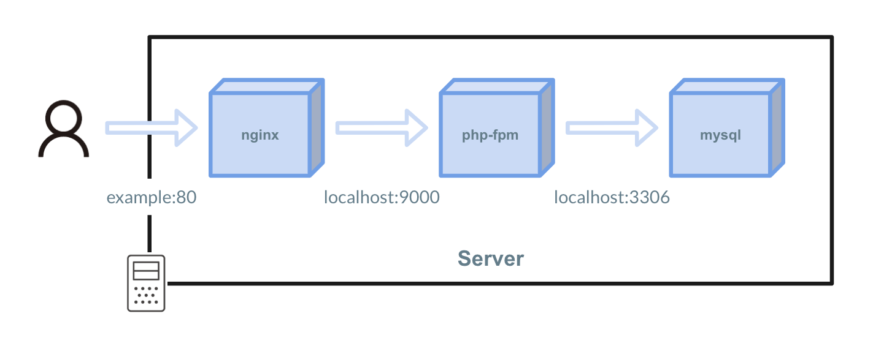
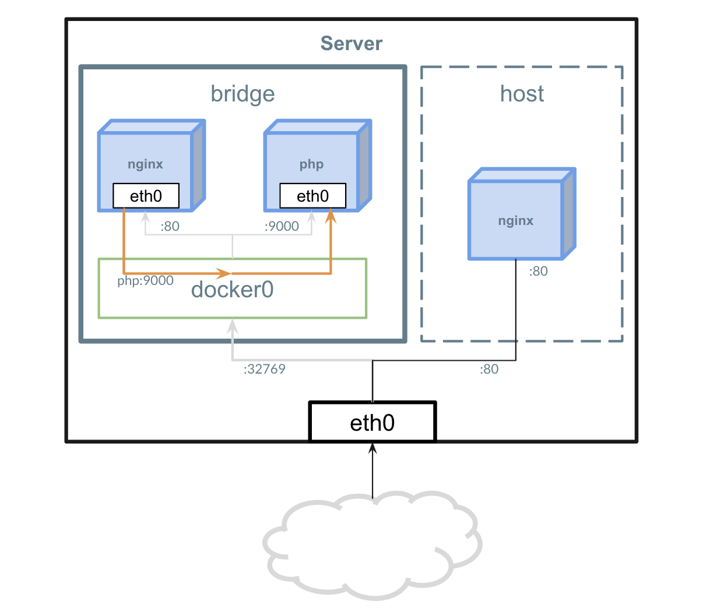

network
Networkを使用する¶

Dockerではネットワークの扱いが重要になってきます。
先述したDocker Container の動きの通り 1コンテナでは1プロセスを動かす 設計です。
nginxとphp-fpmのように複数プロセスを協調して動かす必要がある時はソケットではなく、ネットワークで通信を行うことが推奨されています。
Dockerでのネットワークは特にKubernetes・ECS・docker-composeのような各種オーケストレーションツールを使用する際に意識する必要があります。
Driverの種類¶

Dockerはネットワークの振る舞いを定義することが可能で、デフォルトでは2種類のNetwork Driver が存在します。
1. bridge¶
Dockerを使用する際は基本的にこのNetwork Driverが使用されます。
Linuxカーネルのbridgeネットワークを使用するための機能
また、何も指定せずDocker Container を起動すると docker0 という名前のbridgeネットワークに所属します。
2. host¶
ホストマシンのeth0を直接使用する方法です。
(3. none )¶
どのDriverも使用せず、起動したコンテナをネットワークに所属させないための設定です。
ネットワークを試す¶
1. デフォルトで存在するネットワークの確認¶
現在Dockerが管理しているNetwork一覧を出力します。
$ docker network ls
NETWORK ID NAME DRIVER SCOPE
5d465d8f421e bridge bridge local
8ca0ba4f70cb host host local
f4c209eabaad none null local
ホスト側のネットワークも確認してみましょう。
docker0 というネットワークの存在を確認できます。
$ ip a
1: lo: <LOOPBACK,UP,LOWER_UP> mtu 65536 qdisc noqueue state UNKNOWN qlen 1
link/loopback 00:00:00:00:00:00 brd 00:00:00:00:00:00
inet 127.0.0.1/8 scope host lo
valid_lft forever preferred_lft forever
2: docker0: <NO-CARRIER,BROADCAST,MULTICAST,UP> mtu 1500 qdisc noqueue state DOWN
link/ether 02:42:bb:3c:72:1d brd ff:ff:ff:ff:ff:ff
inet 172.17.0.1/16 brd 172.17.255.255 scope global docker0
valid_lft forever preferred_lft forever
14170: eth1@if14171: <BROADCAST,MULTICAST,UP,LOWER_UP,M-DOWN> mtu 1500 qdisc noqueue state UP
link/ether 02:42:ac:12:00:03 brd ff:ff:ff:ff:ff:ff
inet 172.18.0.3/16 scope global eth1
valid_lft forever preferred_lft forever
14172: eth0@if14173: <BROADCAST,MULTICAST,UP,LOWER_UP,M-DOWN> mtu 1500 qdisc noqueue state UP
link/ether ee:7a:0c:ea:1e:70 brd ff:ff:ff:ff:ff:ff
inet 192.168.0.28/23 scope global eth0
valid_lft forever preferred_lft forever
2. 新しいネットワークの作成¶
次は新しいBridgeネットワークを作成してみます。
networkに myapp が増えていることを確認します。
$ docker network ls
NETWORK ID NAME DRIVER SCOPE
5d465d8f421e bridge bridge local
8ca0ba4f70cb host host local
+5d170daf5b6e myapp bridge local
f4c209eabaad none null local
ホスト側のネットワークにも追加されていることを確認します。
$ ip a
1: lo: <LOOPBACK,UP,LOWER_UP> mtu 65536 qdisc noqueue state UNKNOWN qlen 1
link/loopback 00:00:00:00:00:00 brd 00:00:00:00:00:00
inet 127.0.0.1/8 scope host lo
valid_lft forever preferred_lft forever
2: docker0: <NO-CARRIER,BROADCAST,MULTICAST,UP> mtu 1500 qdisc noqueue state DOWN
link/ether 02:42:bb:3c:72:1d brd ff:ff:ff:ff:ff:ff
inet 172.17.0.1/16 brd 172.17.255.255 scope global docker0
valid_lft forever preferred_lft forever
+3: br-5d170daf5b6e: <NO-CARRIER,BROADCAST,MULTICAST,UP> mtu 1500 qdisc noqueue state DOWN
+ link/ether 02:42:d7:12:d9:88 brd ff:ff:ff:ff:ff:ff
+ inet 172.19.0.1/16 brd 172.19.255.255 scope global br-5d170daf5b6e
+ valid_lft forever preferred_lft forever
14170: eth1@if14171: <BROADCAST,MULTICAST,UP,LOWER_UP,M-DOWN> mtu 1500 qdisc noqueue state UP
link/ether 02:42:ac:12:00:03 brd ff:ff:ff:ff:ff:ff
inet 172.18.0.3/16 scope global eth1
valid_lft forever preferred_lft forever
14172: eth0@if14173: <BROADCAST,MULTICAST,UP,LOWER_UP,M-DOWN> mtu 1500 qdisc noqueue state UP
link/ether ee:7a:0c:ea:1e:70 brd ff:ff:ff:ff:ff:ff
inet 192.168.0.28/23 scope global eth0
valid_lft forever preferred_lft forever
3. 作成したNetworkへnginxを参加させる¶
通信を受けるためのサーバーとしてnginxを構築します。
3. AmazonLinux2を起動し、Nginxコンテナへ接続する¶
Bridgeネットワークの場合、同一ネットワークのコンテナにはコンテナ名で名前解決が可能です。
Nginxと疎通できるか myapp ネットワーク内にAmazonLinux2 イメージでコンテナを起動し、 curl を実行してみましょう。
$ docker run --network=myapp -it amazonlinux:2 curl nginx:80
<!DOCTYPE html>
<html>
<head>
<title>Welcome to nginx!</title>
<style>
body {
width: 35em;
margin: 0 auto;
font-family: Tahoma, Verdana, Arial, sans-serif;
}
</style>
</head>
<body>
<h1>Welcome to nginx!</h1>
<p>If you see this page, the nginx web server is successfully installed and
working. Further configuration is required.</p>
<p>For online documentation and support please refer to
<a href="http://nginx.org/">nginx.org</a>.<br/>
Commercial support is available at
<a href="http://nginx.com/">nginx.com</a>.</p>
<p><em>Thank you for using nginx.</em></p>
</body>
</html>
$
4. 新しくネットワークを作成し、疎通できないことを確認する¶
myapp2 というネットワークを作成し、 nginx2 という命名でnginxを起動する。
myapp ネットワークに所属しているAmazonLinux2からcurlを実行し、疎通できないことを確認する。
$ docker run --network=myapp -it amazonlinux:2 curl nginx2:80
curl: (6) Could not resolve host: nginx2
まとめ¶
- 1プロセス1コンテナ、複数プロセスはネットワークを通して通信を行う。
- Bridgeを基本的に使用する。